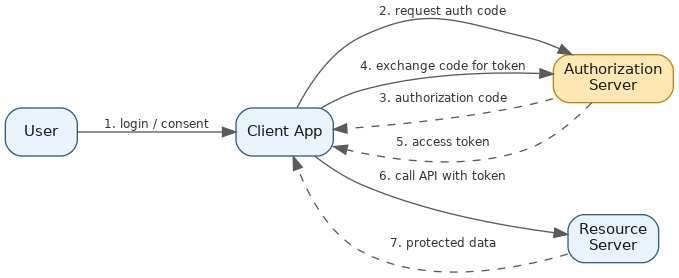
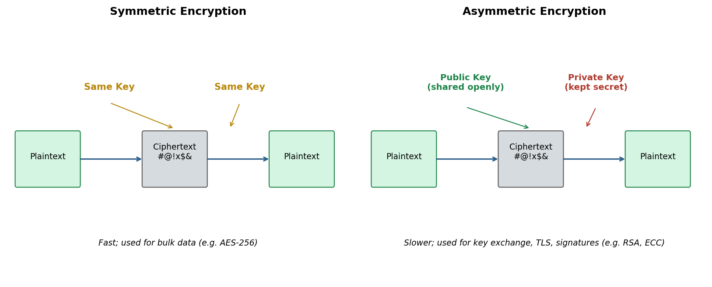
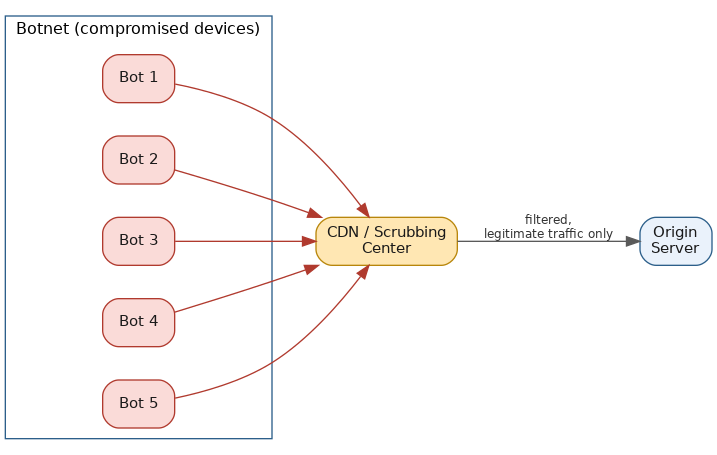

Security
Table of Contents
Overview
Security touches nearly every layer of a distributed system — who's allowed in, what they're allowed to do once inside, how data is protected from prying eyes, and how the system keeps functioning when attackers try to take it down entirely. This page works through that whole arc: what security and privacy actually mean, how authentication and authorization differ, how OAuth and JWT fit together, how encryption protects data at rest and in transit, and how systems defend against DDoS attacks. A companion page in the site's System Design — Building Units section, Security & Edge Protection, covers how these same ideas show up as concrete edge-layer building blocks (WAFs, edge gateways, rate limiters) inside a full system architecture — worth reading alongside this one for the infrastructure-placement angle.
What Is Security and Privacy?
Security, in a system design context, means protecting systems and the data inside them from unauthorized access, tampering, disruption, or destruction. It's usually summarized with the CIA triad: confidentiality (only the people who should see data can see it), integrity (data can't be silently modified or corrupted without detection), and availability (the system stays up and usable for the people who legitimately need it). Everything else covered on this page — authentication, authorization, encryption, and defending against DDoS attacks — exists in service of these three goals.
Privacy is a closely related but distinct concern: it's about how personal data is collected, used, shared, and controlled, and about respecting the rights people have over information describing them — meaningful consent, collecting only what's actually needed, and letting people view, correct, or delete their own data. Security is a prerequisite for privacy (you can't protect someone's personal data if your systems aren't secure to begin with), but privacy layers additional legal, ethical, and regulatory obligations on top, formalized in rules like the EU's GDPR and California's CCPA. A simple way to separate the two: security asks "can an attacker get in?", while privacy asks "even for people who legitimately belong inside, are we handling their data the way we promised?" The 2017 Equifax breach — which exposed sensitive data for roughly 147 million people — is a textbook example of a pure security failure cascading directly into a massive privacy harm, which is why modern teams try to build in "security by design" and "privacy by design" from day one rather than bolting them on afterward.
What Is Authentication?
Authentication answers a single question: who is this? Every login screen, API key check, and fingerprint scan on a phone is a form of authentication — verifying that a person or system really is who they claim to be.
Authentication systems typically rely on one or more "factors": something you know (a password or PIN), something you have (a phone, a hardware key like a YubiKey, or a one-time-password app), or something you are (a fingerprint or face scan). Requiring more than one of these together is called multi-factor authentication (MFA), and it's dramatically harder to defeat than a password alone, since stealing a password doesn't also hand an attacker your phone or your face.
At the organizational level, authentication is often centralized through single sign-on (SSO), so a person logs in once and gets access to every connected application without re-entering credentials each time — commonly implemented via protocols like SAML or OpenID Connect (OIDC). OIDC in particular is an authentication layer built directly on top of OAuth 2.0 (more on that shortly). A familiar example: an employee logs into their company's identity provider (Okta, Google Workspace) once in the morning, and that single login carries through into Slack, Salesforce, and the HR portal with no further prompts.
What Is Authorization?
Authorization is a separate step that happens after authentication: it determines what an already-identified user or system is allowed to do — "what can this person access, and what actions can they take?" Authentication has to come first, since there's no way to decide what someone can do before you know who they are.
A few common models implement this. Role-based access control (RBAC) ties permissions to roles — "admin," "editor," "viewer" — and a user inherits whatever permissions their assigned role carries. Attribute-based access control (ABAC) is more flexible, granting or denying access based on a combination of attributes and context — the sensitivity of the resource, time of day, or the user's location. Simpler systems use access control lists (ACLs) that just spell out which users or groups can do what on a specific resource.
A concrete example draws the line clearly: logging into Google Drive with your email and password is authentication. Once you're in, whether you can merely view a document, comment on it, or fully edit it is authorization — and it can differ document by document even though you're the same authenticated user throughout. OAuth 2.0, covered next, is the industry-standard framework built specifically for authorization — it lets a user grant a third-party app limited access to their data on another service (say, letting a calendar-scheduling app read your Google Calendar events) without ever handing over your actual password.
Authentication vs. Authorization
Because the two terms sound alike and are so tightly linked in practice, it helps to see them side by side:
| Dimension | Authentication | Authorization |
|---|---|---|
| Question it answers | Who are you? | What are you allowed to do? |
| When it happens | First | After authentication succeeds |
| Typical mechanisms | Passwords, MFA, biometrics, SSO | Roles (RBAC), attributes (ABAC), access control lists |
| Common standards/protocols | SAML, OpenID Connect (OIDC) | OAuth 2.0, ACLs, policy engines |
| Example | Logging into an email account | Deciding whether that account can read, send, or delete emails, or reach an admin panel |
| Typical failure response | HTTP 401 Unauthorized (not authenticated) | HTTP 403 Forbidden (authenticated but not permitted) |
One common point of confusion: the HTTP status for a failed authentication check is literally named "401 Unauthorized," which is misleading — 401 actually means the request lacked valid authentication credentials at all, while 403 Forbidden means the system knows exactly who you are but you simply don't have permission to do what you're attempting.
OAuth vs. JWT for Authentication
This comparison trips people up constantly, so it's worth being precise: OAuth 2.0 and JWT are not competing alternatives — they solve different problems and are frequently used together. OAuth is an authorization framework: a set of standardized flows describing how a user (the "resource owner") can grant a third-party application (the "client") limited access to their resources on another service (the "resource server"), through an authorization server that issues access tokens — all without the user ever handing their password to the third-party app. A JSON Web Token (JWT) is simply a token format — a compact, URL-safe way of packaging signed claims (small pieces of information) as JSON. OAuth defines how access gets granted; JWT is one common way of representing the token that proves access was granted. The more accurate framing isn't "OAuth vs. JWT" but "OAuth is a framework that often uses JWTs as its token format, but doesn't have to."
Structurally, a JWT is three base64url-encoded parts separated by dots: a header (the signing algorithm), a payload (the actual claims — user ID, expiration time, granted scopes), and a signature (letting anyone with the right key verify the token hasn't been tampered with). Because a JWT is self-contained and cryptographically signed, a server can verify it locally just by checking the signature, with no callback to a central authorization server and no database lookup — this is what people mean when they call JWTs "stateless." OAuth access tokens, by contrast, can be either opaque strings that require a lookup against the authorization server to validate (stateful), or JWTs that can be verified locally (stateless) — OAuth itself doesn't mandate one or the other.
| Dimension | OAuth 2.0 | JWT |
|---|---|---|
| What it is | An authorization framework / protocol | A token format |
| Primary purpose | Defines how a client gets limited, delegated access to a resource | Defines how to package and sign claims compactly |
| State | Can be stateful — opaque tokens may require checking with the authorization server | Enables stateless verification — no server-side lookup needed when used as the token |
| Typical use case | Letting a third-party app access your data on another service (delegated access) | API authentication, stateless sessions, ID tokens |
| Example | "Login with Google" granting a scheduling app limited calendar access | An API gateway validating a signed token's signature locally on every request |
It's worth reconnecting this back to authentication: OpenID Connect (OIDC), mentioned earlier, is the piece that actually adds authentication on top of OAuth 2.0's authorization machinery. It introduces an "ID token" — specifically a JWT containing claims about who the user is — issued alongside the OAuth access token during login.

What Is Encryption?
Encryption transforms readable data ("plaintext") into a scrambled, unreadable form ("ciphertext") using an algorithm and a key, such that only whoever holds the correct key can reverse the process and recover the original data. It's the primary tool for protecting confidentiality — even if an attacker manages to intercept or steal encrypted data, it should be useless to them without the key.
There are two fundamental approaches. Symmetric encryption uses the exact same key to both encrypt and decrypt. It's fast and efficient, which makes it well suited to encrypting large volumes of data — AES-256 is the modern standard, used by disk-encryption tools like BitLocker and FileVault, most VPNs, and database encryption at rest. Its main weakness is the "key exchange problem": both parties need to somehow agree on the same secret key beforehand without an eavesdropper intercepting it. Asymmetric encryption (public-key cryptography) solves that by using a mathematically linked key pair — a public key that can be shared with anyone, and a private key that must stay secret. Data encrypted with the public key can only be decrypted with the matching private key (and the reverse pattern underlies digital signatures). RSA and ECC are the leading asymmetric algorithms, used for TLS handshakes, SSH keys, and digital signatures — but asymmetric encryption is significantly slower and more computationally expensive, so it's rarely used to encrypt bulk data directly.
In practice, secure systems combine both in a hybrid approach — exactly what happens every time you visit an HTTPS website. Your browser and the server perform a TLS handshake using asymmetric encryption to verify the server's identity and securely agree on a random, one-time symmetric key; once that key exchange finishes, the rest of the session's data is encrypted with fast symmetric encryption. That gives you the trust guarantees of public-key cryptography for establishing the connection, combined with the speed of symmetric encryption for the bulk of the conversation.
It's also worth distinguishing two contexts where encryption applies. Encryption in transit protects data while it's moving across a network — between a browser and a server, or between two backend services — typically via TLS/HTTPS or a VPN tunnel (the padlock icon in a browser's address bar signals this). Encryption at rest protects data while it's sitting in storage — on a disk, in a database, in a backup, or in a cloud bucket like Amazon S3 — typically through disk/volume encryption or database-level encryption features. Neither substitutes for the other: data encrypted only at rest can still be intercepted in plain form while traveling over the network, and data encrypted only in transit is still exposed if an attacker gets access to the storage where it eventually lands.

What Are DDoS Attacks?
A Denial of Service (DoS) attack is any attempt to make a system unavailable to its legitimate users, typically by overwhelming it with more work or traffic than it can handle. A Distributed Denial of Service (DDoS) attack is the same idea carried out from many sources at once — usually a botnet, a large network of compromised, malware-infected devices (PCs, security cameras, home routers) that an attacker controls remotely and directs to flood a target simultaneously. Because the traffic arrives from thousands or millions of different IP addresses at once, simply blocking one source doesn't help, which is what makes DDoS attacks so much harder to defend against than an ordinary DoS from a single machine.
DDoS attacks generally fall into three categories. Volumetric attacks try to saturate the target's available network bandwidth with sheer traffic — UDP floods, ICMP floods, and amplification attacks, where an attacker sends a small request with a spoofed source address (the victim's) to an open server such as a misconfigured DNS or NTP server, which then sends a much larger response to the victim; a small forged request can trigger a response tens to hundreds of times larger, letting attackers generate enormous traffic cheaply. Protocol attacks exploit weaknesses in how network protocols work to exhaust server or network-equipment resources rather than raw bandwidth — the classic example is a SYN flood, where an attacker sends huge numbers of TCP connection-initiation packets without ever completing the handshake, tying up the server's limited pool of pending-connection slots until it can't accept new legitimate connections. Application-layer (Layer 7) attacks target the application itself with requests that look legitimate — repeatedly hammering an expensive search endpoint or a login page — making them harder to distinguish from real user traffic and requiring smarter, behavior-based detection rather than simple traffic filtering.
The scale these attacks can reach was made vivid in October 2016, when the Mirai botnet — built from hijacked, poorly secured IoT devices like security cameras and home routers — was used to attack Dyn, a major DNS provider. The attack came in multiple waves and peaked at roughly 1.2 terabits per second, one of the largest DDoS attacks recorded at the time. Because so many major companies depended on Dyn for DNS resolution, the attack knocked dozens of well-known services offline or made them unreachable for hours across the US and Europe — including Twitter, Netflix, Reddit, Spotify, Amazon, and PayPal — a stark demonstration of how one shared infrastructure dependency can turn a single attack into a cascading, widespread outage.
Modern mitigation layers several defenses together: CDNs and edge networks like Cloudflare sit in front of origin servers and absorb/filter huge volumes of traffic across a globally distributed network before it ever reaches the actual application; cloud providers offer purpose-built protection such as AWS Shield (a baseline level included automatically for all AWS customers, with an "Advanced" tier adding real-time attack visibility, cost protection, and access to a dedicated response team), typically paired with a web application firewall (WAF) for filtering malicious application-layer requests; and general techniques like rate limiting, IP reputation filtering, and anycast routing (spreading incoming traffic across many geographically distributed data centers so no single location bears the full brunt of an attack) round out a layered defense strategy.
